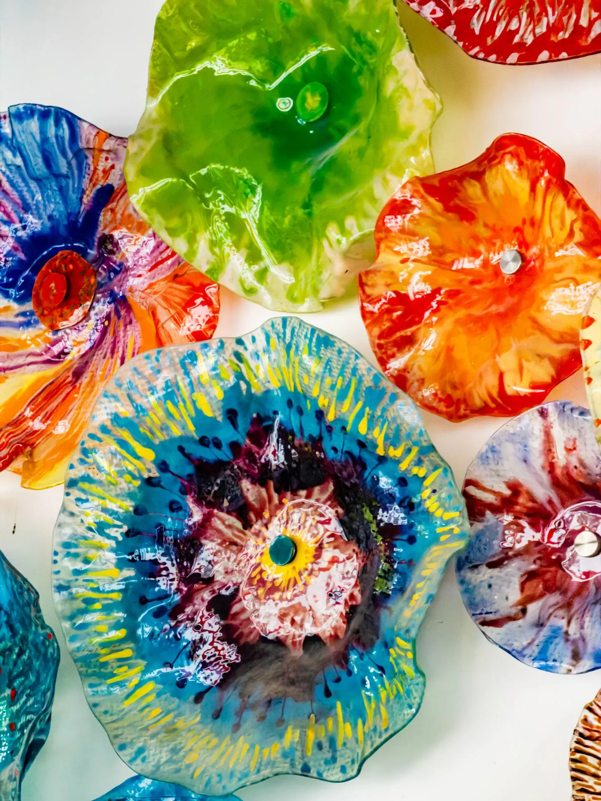
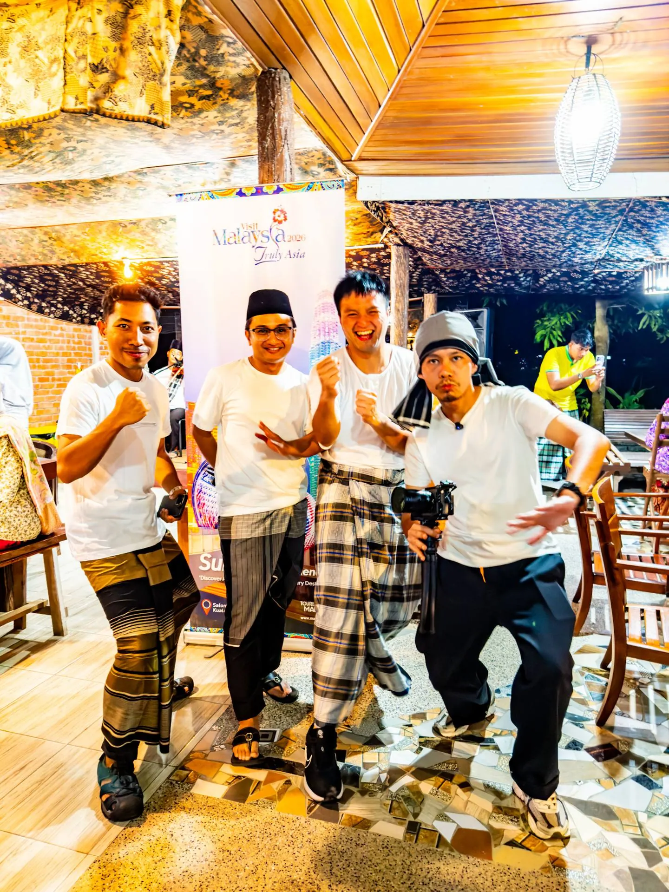

Kampung food, batik & honey straight from the nest
First stop was lunch at Dangau Langkawi — authentic Malay kampung food eaten right beside a paddy field, with live traditional music playing. What a way to start.
Then we visited the Langkawi Craft Complex to try our hand at batik colouring, before heading to a Kelulut (stingless bee) honey farm, where we sucked the honey directly out of the nest. The flavour was surprisingly tangy — such an interesting experience, haha.
We checked in at Langkawi Country Lodge, our home for the whole trip, and even received a goodie bag of merchandise from Tourism Malaysia Langkawi to bring home. Later we dropped by Art Case Langkawi, where the owner and family treated us to homemade nasi lemak that tasted like childhood, and gave us customised art plates. Dinner was fresh seafood by the sea at Fish Farm Restaurant — cooked Chinese-style and really, really good.


▶ Watch: Day 1 in Langkawi